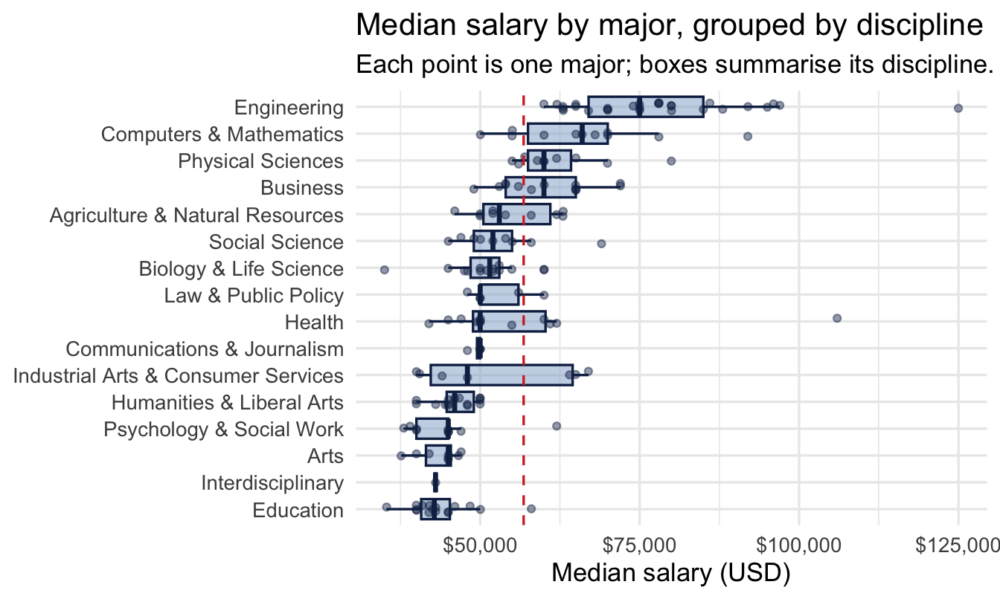
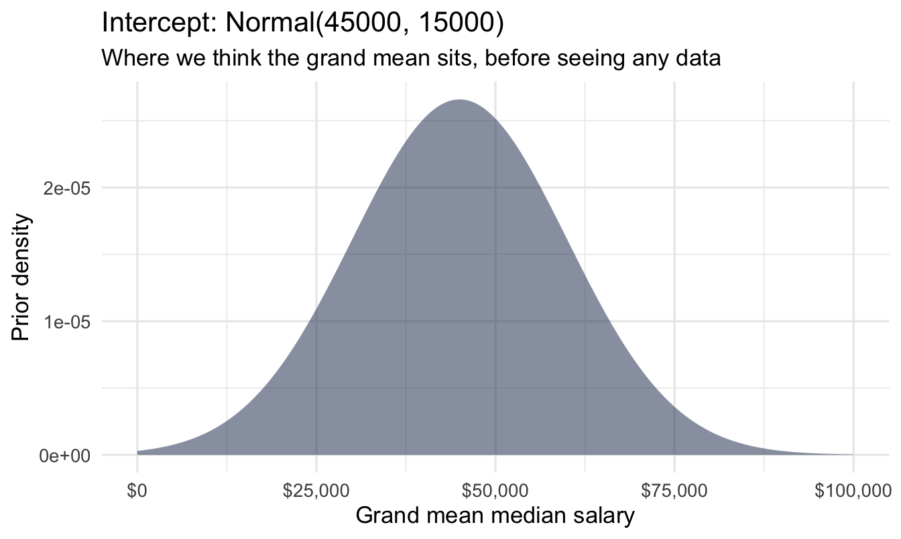
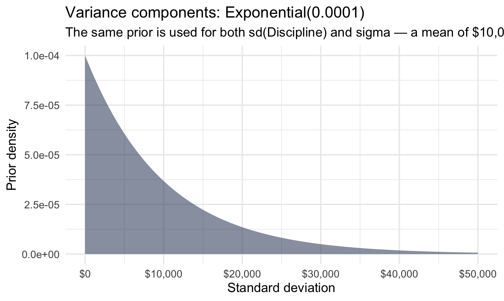
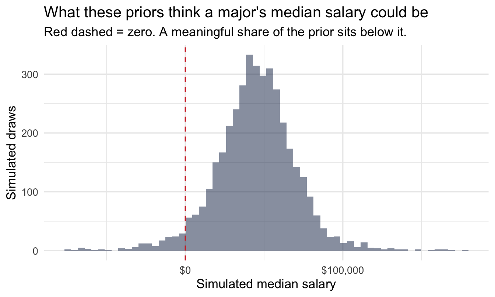
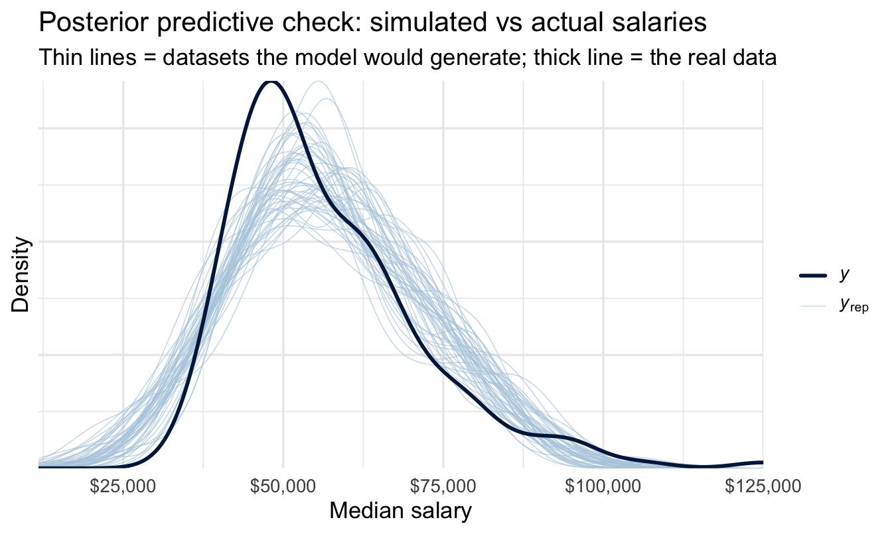
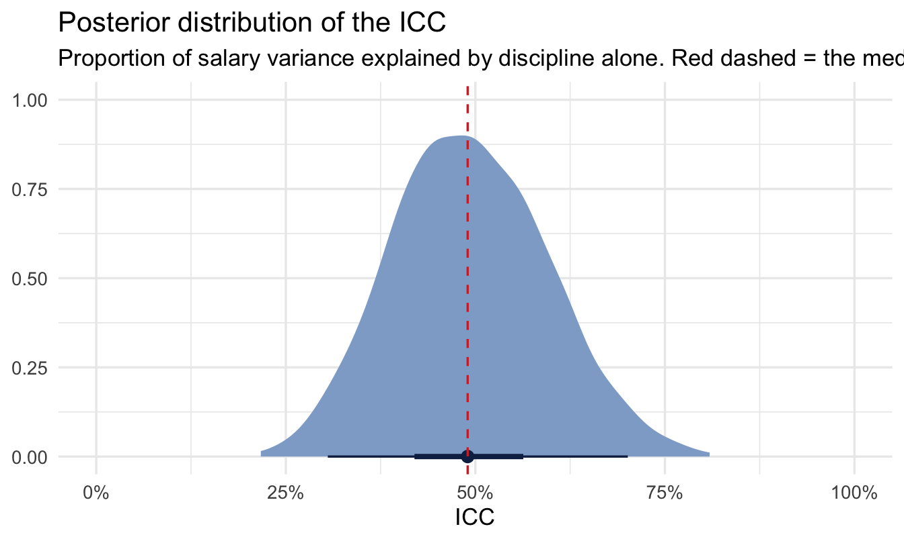

library(tidyverse)
library(peopleanalyticsdata)
library(brms)
library(tidybayes)
theme_set(theme_minimal(base_size = 13))
set.seed(2026)
# Shared colour tokens (matching theme/academicdesign*.scss). Navy and light
# navy carry the data; red is reserved for reference lines and annotations,
# never for a second data series.
navy <- "#122a52"
navy_light <- "#8fabd0"
red <- "#d32f2f"
data("graduates", package = "peopleanalyticsdata")
# Guard against missing values before modelling (Chapter 1 found gaps
# in a similar teaching dataset).
graduates <- graduates |> drop_na(Median_salary, Discipline, Unemployment_rate)16 Hierarchical Models for Pay and Variance
Welcome back
“How much of our pay variation is explained by level, versus function, versus location, versus… nothing structural at all?” is one of the most common questions a People Analytics team gets asked, usually attached to a pay equity review or a compensation redesign. It’s also a question that a simple average-by-group comparison answers badly, for the same reason Chapter 15 warned you about: small groups produce noisy averages, and a table of “average pay by department” mixes real structural variation with pure noise.
This chapter extends the partial-pooling machinery from Chapters 8 and 15 to a new job: not just producing fairer individual estimates, but decomposing variance itself — answering “how much” a grouping factor matters, as a finding in its own right.
The request, as it actually arrives
The Reward Director has a compensation redesign starting in the autumn and a table of average pay by department that she doesn’t trust:
“Before we spend six months rebuilding the grade structure, I need to know whether the structure is doing anything. Is pay here mostly determined by what job family you’re in — or is it mostly down to who negotiated well? Because those are different projects.”
Notice what she is not asking for. Not a list of departments ranked by pay, which is what the table she already has provides. She is asking how much the grouping explains — a single quantity, with enough honesty about its precision that she can decide whether to commit a six-month programme to it. That quantity has a name and this chapter computes it.
Note
The dataset in this chapter is public labour-market data rather than her comp file, but the shape of the question and the shape of the answer are identical, and the last section covers what changes when you point the same model at a real internal dataset.
Analysis strategy
What we have. Median salaries by major, with each major belonging to a broader discipline. Sixteen disciplines — few enough that the precision of the answer is part of the finding.
What would answer the Reward Director’s question. A single proportion: how much of the variation in pay sits between disciplines rather than within them, with an interval wide enough to be honest about sixteen groups. Not a ranking of disciplines by pay, which is the table she already has and does not trust.
What could go wrong. The naive version — average pay by group, eyeball the spread — mixes real structural variation with the noise that small groups generate, which is Chapter 15’s problem in a new costume. There is also a units trap specific to this chapter, and it is the one most likely to embarrass you later: our rows are medians, which have had most of the individual variation averaged out of them before the model sees them, and a real comp file has that variation back in.
So the plan. Fit a model that splits the variation into a between-discipline part and a within-discipline part, take the ratio, and carry the whole posterior for that ratio rather than a point estimate. Then say plainly what changes when the same model is pointed at employee-level data.
What would make us stop. If the interval on that proportion is wide enough to contain both “the structure explains most of it” and “the structure explains little of it”, the answer to should we commit six months to a grade redesign is not a number — it is that this data cannot support the decision, and which data could.
What you’ll be able to do by the end
- Distinguish variation between groups from variation within groups
- Fit a variance-components model and compute an intraclass correlation (ICC)
- Interpret “40% of the variance sits at the discipline level” in plain language
- Extend the idea to multiple, crossed grouping factors (level, function, geography) the way a real compensation dataset would need
- Know the limits of this kind of analysis for actual pay equity work
16.1 Setup
graduates has US labour-market data for 173 college majors, grouped into broad disciplines (Discipline): Major, Total (graduates of working age), Unemployment_rate, and Median_salary. It’s not People Analytics data in the internal-company sense — it’s real labour-market data (sourced via FiveThirtyEight) — but it gives us exactly the structure we need: many majors, nested within a smaller number of disciplines, with genuinely varying pay.
16.2 The question: where does pay variation actually sit?
16.2.1 A raw look, discipline by discipline
disc_summary <- graduates |>
group_by(Discipline) |>
summarise(
n_majors = n(),
mean_salary = mean(Median_salary),
sd_salary = sd(Median_salary)
) |>
arrange(desc(mean_salary))
disc_summary# A tibble: 16 × 4
Discipline n_majors mean_salary sd_salary
<chr> <int> <dbl> <dbl>
1 Engineering 29 77759. 14081.
2 Computers & Mathematics 11 66273. 11791.
3 Physical Sciences 10 62400 7619.
4 Business 13 60615. 7332.
5 Health 12 56458. 16852.
6 Agriculture & Natural Resources 10 55000 6110.
7 Social Science 9 53222. 7172.
8 Law & Public Policy 5 52800 5020.
9 Industrial Arts & Consumer Services 7 52643. 12188.
10 Biology & Life Science 14 50821. 6219.
11 Communications & Journalism 4 49500 1000
12 Humanities & Liberal Arts 15 46080 3366.
13 Psychology & Social Work 9 44556. 7299.
14 Education 16 43831. 5174.
15 Arts 8 43525 3336.
16 Interdisciplinary 1 43000 NA graduates |>
mutate(Discipline = fct_reorder(Discipline, Median_salary, .fun = median)) |>
ggplot(aes(x = Median_salary, y = Discipline)) +
geom_boxplot(fill = navy_light, colour = navy, alpha = 0.5,
1 outlier.shape = NA) +
geom_jitter(height = 0.15, alpha = 0.45, size = 1.4, colour = navy) +
geom_vline(xintercept = mean(graduates$Median_salary),
2 linetype = "dashed", colour = red) +
scale_x_continuous(labels = scales::dollar) +
labs(
title = "Median salary by major, grouped by discipline",
subtitle = "Each point is one major; boxes summarise its discipline. Red dashed = the grand mean.",
x = "Median salary (USD)", y = NULL
)- 1
-
outlier.shape = NAbecause every major is already drawn as a point — leaving it on would plot the extreme ones twice. - 2
- The convention used throughout this book: navy carries the data, red marks a reference value. Two colours doing two different jobs, rather than two data series competing.

There’s an obvious question sitting in this plot: some of the spread is between disciplines (Engineering majors, as a group, sit higher than Education majors) and some is within a discipline (majors inside Engineering still differ from each other). How much of the total variance is which?
16.3 Fitting a variance-components model
This is a job for the same varying-intercepts structure as Chapter 8 — but this time the quantity we care about most isn’t each group’s shrunk estimate, it’s the two variance components themselves:
New scale, new numbers — worth a look before fitting, as always:
tibble(x = seq(0, 100000, length.out = 400)) |>
mutate(density = dnorm(x, 45000, 15000)) |>
ggplot(aes(x, density)) +
geom_area(fill = navy, alpha = 0.5) +
scale_x_continuous(labels = scales::dollar) +
labs(title = "Intercept: Normal(45000, 15000)",
subtitle = "Where we think the grand mean sits, before seeing any data",
x = "Grand mean median salary", y = "Prior density")
tibble(x = seq(0, 50000, length.out = 400)) |>
mutate(density = dexp(x, 0.0001)) |>
ggplot(aes(x, density)) +
geom_area(fill = navy, alpha = 0.5) +
scale_x_continuous(labels = scales::dollar) +
labs(title = "Variance components: Exponential(0.0001)",
subtitle = "The same prior is used for both sd(Discipline) and sigma — a mean of $10,000 either way",
x = "Standard deviation", y = "Prior density")
16.3.1 And what those two together imply about a salary
Plotting each prior on its own says what we believe about each parameter. The prior predictive check asks the more useful question: put them together, and what salaries does this model think are possible before it has seen a single major? Chapter 10’s step 5 asks for both, and this is the half that catches mistakes:
Code
n_sim <- 4000
tibble(
grand_mean = rnorm(n_sim, 45000, 15000),
sd_disc = rexp(n_sim, 0.0001),
sigma = rexp(n_sim, 0.0001),
simulated = rnorm(n_sim,
1 mean = rnorm(n_sim, grand_mean, sd_disc),
sd = sigma)
) |>
ggplot(aes(simulated)) +
geom_histogram(bins = 60, fill = navy, alpha = 0.5) +
geom_vline(xintercept = 0, linetype = "dashed", colour = red) +
scale_x_continuous(labels = scales::dollar) +
labs(
title = "What these priors think a major's median salary could be",
subtitle = "Red dashed = zero. A meaningful share of the prior sits below it.",
x = "Simulated median salary", y = "Simulated draws"
)- 1
- The two-stage structure of the model itself, simulated forwards: a discipline’s mean is drawn around the grand mean, and a major’s salary is drawn around its discipline’s mean.

ImportantThe prior thinks negative salaries are plausible, and they aren’t
A good chunk of that distribution is below zero, which is impossible. This is the standard failure of a Normal prior on a strictly positive quantity, and it is worth flagging rather than hiding for the same reason Chapter 22 flags it on the engagement scale: with 173 majors the likelihood overwhelms the prior immediately, so it changes nothing here. It would matter with nine data points instead of 173.
The two honest fixes, in increasing order of effort: tighten exponential(0.0001) (a mean of $10,000 for a between-discipline standard deviation is generous — the disciplines plainly don’t differ by that much), or model log(salary) instead, which cannot go negative by construction and is what the crossed-factor model later in this chapter recommends anyway.
The habit is the point. You cannot see this problem by looking at the two parameter priors separately — each one is entirely reasonable on its own.
fit_var <- brm(
Median_salary ~ 1 + (1 | Discipline),
data = graduates, family = gaussian(),
prior = c(prior(normal(45000, 15000), class = Intercept),
prior(exponential(0.0001), class = sd),
prior(exponential(0.0001), class = sigma)),
chains = 4, iter = 2000, seed = 14, refresh = 0
)
summary(fit_var) Family: gaussian
Links: mu = identity
Formula: Median_salary ~ 1 + (1 | Discipline)
Data: graduates (Number of observations: 173)
Draws: 4 chains, each with iter = 2000; warmup = 1000; thin = 1;
total post-warmup draws = 4000
Multilevel Hyperparameters:
~Discipline (Number of levels: 16)
Estimate Est.Error l-95% CI u-95% CI Rhat Bulk_ESS Tail_ESS
sd(Intercept) 9700.35 2027.68 6517.81 14468.43 1.00 915 1503
Regression Coefficients:
Estimate Est.Error l-95% CI u-95% CI Rhat Bulk_ESS Tail_ESS
Intercept 53925.58 2590.41 48622.36 58999.94 1.01 704 1162
Further Distributional Parameters:
Estimate Est.Error l-95% CI u-95% CI Rhat Bulk_ESS Tail_ESS
sigma 9648.34 543.25 8669.50 10785.12 1.00 4527 3137
Draws were sampled using sampling(NUTS). For each parameter, Bulk_ESS
and Tail_ESS are effective sample size measures, and Rhat is the potential
scale reduction factor on split chains (at convergence, Rhat = 1).16.3.2 Reading the output, line by line
There is less here than in Chapter 12’s varying-slopes output, and one block matters far more than the others:
Multilevel Hyperparameters — the number this chapter is about. sd(Intercept) is the between-discipline standard deviation: how far a typical discipline’s mean salary sits from the grand mean. This is the first of the two variance components, and it is a finding in its own right rather than a nuisance parameter. Note that its credible interval does not include zero — with sixteen disciplines it comfortably could have, and that it doesn’t is what licenses the rest of the chapter.
Further Distributional Parameters. sigma is the within-discipline standard deviation: how far a typical major sits from its own discipline’s mean. This is the second component. Read the two side by side — the ratio between them is, in effect, the answer, and the next section makes that formal.
Regression Coefficients. Just Intercept here: the grand mean median salary across all disciplines. Useful for a sanity check against the raw plot above, and not much else.
The two columns on the right, on every line. Rhat should read 1.00 and Bulk_ESS / Tail_ESS should be in the hundreds at minimum — Chapter 10’s step 7 and Chapter 11’s subject. A model this simple almost never has trouble, which is exactly why it’s worth glancing at now: you want the habit established before you meet a model that does.
Tip
Both variance components come with a full credible interval, and that is the part a classical variance-components analysis struggles to give you. With only sixteen disciplines, sd(Intercept) is genuinely imprecisely known — and a method that reported it as a single number would hide that.
16.3.3 Does the model fit?
Before reading anything off it, the posterior predictive check from Chapter 10’s step 7 — does a model this simple actually reproduce the shape of the salary data?
pp_check(fit_var, ndraws = 50) +
scale_x_continuous(labels = scales::dollar) +
labs(title = "Posterior predictive check: simulated vs actual salaries",
subtitle = "Thin lines = datasets the model would generate; thick line = the real data",
x = "Median salary", y = "Density")
NoteWhat to look for, and what this one shows
The thin lines are salary distributions the fitted model considers plausible; the thick line is the data. You want the thick line to look like one more draw from the same family.
Two things to expect here. The model is symmetric — a Normal around each discipline’s mean — while real pay distributions are right-skewed, so watch whether the simulated lines put more weight in the left tail and less in the right than the data does. And because it’s Normal, some simulated draws will run below plausible salaries entirely, the same issue the prior predictive check flagged, now with the data pulling against it.
Neither invalidates the ICC below — the variance decomposition is fairly robust to modest misfit in shape — but both are arguments for the log-scale version recommended later, and both are things you’d want to have noticed before a compensation committee asks.
16.3.4 Computing the ICC
The intraclass correlation (ICC) answers “what proportion of total variance sits at the discipline level?” — it’s just the between-group variance divided by the total:
draws <- as_draws_df(fit_var)
icc_draws <- draws |>
transmute(
var_discipline = sd_Discipline__Intercept^2,
var_residual = sigma^2,
icc = var_discipline / (var_discipline + var_residual)
)
icc_summary <- icc_draws |>
summarise(
median_icc = median(icc),
lower = quantile(icc, 0.025),
upper = quantile(icc, 0.975)
)
icc_summary# A tibble: 1 × 3
median_icc lower upper
<dbl> <dbl> <dbl>
1 0.490 0.305 0.701ggplot(icc_draws, aes(x = icc)) +
stat_halfeye(fill = navy_light, colour = navy, .width = c(0.5, 0.95)) +
geom_vline(xintercept = icc_summary$median_icc,
linetype = "dashed", colour = red) +
scale_x_continuous(labels = scales::percent, limits = c(0, 1)) +
labs(
title = "Posterior distribution of the ICC",
subtitle = "Proportion of salary variance explained by discipline alone. Red dashed = the median; bars = 50% and 95% intervals.",
x = "ICC", y = NULL
)
16.3.5 Saying it out loud
That chart and that table are the finding, so here is the sentence they support — the “one chart, one sentence” pairing Chapter 10 asked for:
About 49% of the variation in median salary sits between disciplines rather than within them (95% credible interval 31% to 70%). The rest is variation between majors inside the same discipline.
Two things worth noticing about how that sentence is built. It leads with the quantity, not the model. And the interval is wide — which is the honest consequence of having only sixteen disciplines, and precisely what a point-estimate ICC would have concealed. If someone is about to make a decision on the strength of that number, the width of the interval is as much a part of the finding as the middle of it.
Which is what the Reward Director needed. A high ICC says the structure is doing real work and the redesign is a structural project. A low one says most of the variation is happening inside job families, and a new grade architecture will move less than she hopes — the problem is in how individual pay decisions get made, which is a different six months of work. She does not need to understand a variance component to act on that. She needs one number, its interval, and the sentence above.
ImportantReading an ICC
An ICC near 0 says discipline barely matters — majors vary about as much within a discipline as they do between disciplines, so grouping by discipline tells you little. An ICC near 1 says almost all the variation is structural — once you know the discipline, you know almost everything about typical pay in that major. Most real organisational pay data lands somewhere in between, and that number is itself the finding — not a nuisance statistic on the way to something else.
16.4 Extending to a real compensation dataset
WarningCarry this number across carefully
The ICC above was computed on majors’ median salaries — one row per major, each already a summary of many graduates. So it is the between-discipline share of variation in medians, and medians have had most of the individual variation averaged out of them before the model ever sees them.
Individual-level pay data has that variation back in. Simulating plausible within-major salary distributions under the same between-discipline structure puts the employee-level ICC substantially lower — somewhere in the region of 0.1 to 0.4 rather than approaching 0.5, depending on how wide pay is within a major.
Read the figure above as close to an upper bound for what you would find on your own comp file, not as an estimate of it. The direction of the error is predictable, which at least makes it safe: a Reward Director told “structure explains about half of pay variation” and then shown a person-level analysis will find the structural share has shrunk, never grown. Say which one you computed, every time — and when the decision rests on it, compute it on the individual-level data, which is what the rest of this section is about.
graduates only has one grouping factor, and only major-level medians. A real internal comp dataset has neither limitation: one row per employee, and several crossed factors at once — level, function, geography — none of which is neatly nested inside another the way Major sits inside Discipline. The same machinery extends directly:
# Illustrative — not run, no internal comp dataset available here
fit_comp <- brm(
log(salary) ~ 1 + (1 | level) + (1 | job_family) + (1 | geography),
data = comp_data, family = gaussian(),
chains = 4, iter = 2000
)
Tip
job_family rather than function, deliberately — function is a reserved word in R and cannot be used as a column name without backticks. A small thing that costs an afternoon the first time an HRIS extract arrives with a column called exactly that.
Each (1 | ...) term gets its own variance component, and you can ask the same ICC-style question of each one: how much of pay variance sits at level, versus function, versus geography, versus unexplained individual variation. (Salary is typically modelled on the log scale in practice — pay differences are usually more proportional than additive, and log-scale residuals tend to look much closer to normal.)
NoteA different lens: this is “variance components analysis,” a classical idea
Decomposing variance into between- and within-group pieces predates Bayesian statistics by decades — it’s the core idea behind the classical random-effects ANOVA and variance components analysis taught in experimental design courses, computed via expected mean squares rather than a posterior. lme4::lmer() plus the performance::icc() helper function will get you a point-estimate ICC in the frequentist framework, often quickly. The Bayesian version earns its keep here for the same reason as Chapter 15: a full posterior distribution for the ICC itself, which matters when you have a modest number of groups (like our 16 disciplines) and don’t want to overstate how precisely you know the answer.
TipFor the ML/DS crowd
If you’ve done feature engineering for a gradient-boosted model with a high-cardinality categorical column (postcode, job title, store ID), you’ve likely used target encoding or mean encoding — replacing a category with the average outcome for that category, usually with some smoothing toward the global mean for rare categories. That smoothing is empirical Bayes / partial pooling again, wearing a different hat, and the ICC computed here is directly related to how much that smoothing matters: a high ICC means the category is doing real work and deserves less smoothing; a low ICC means most of what looks like a category effect is noise, and aggressive smoothing (or dropping the feature) is the right call.
16.5 Where this kind of analysis has to be handled carefully
ImportantThis is not, on its own, a pay equity audit
A variance-components model tells you how much variance sits at a given level of structure — it does not, by itself, tell you whether that structure is fair, legal, or free of bias.
The gap is not a small one, and it is worth being precise about what would close it. A pay equity analysis controls for legitimate, defensible factors — role, experience, performance, market rate — before looking at protected characteristics. Deciding which factors are legitimate is a causal question, not a statistical one, and it is the hardest part of the whole exercise. Control for something that is itself a consequence of bias and you will explain the gap away rather than measure it: if people from one group are systematically placed in lower-paid roles, then “controlling for role” hides exactly what you were asked to find.
Chapter 21 is about how to make that decision defensibly, and Chapter 23 about how to make it with the people who know the organisation rather than alone at your desk. Neither turns this chapter into a pay equity audit on its own, but together they supply the piece that is missing here.
Two things remain true regardless. This kind of work typically involves legal counsel and is often conducted under legal privilege. And the right specialists — legal, compensation, sometimes external counsel — should be in the room before any model output of this kind goes near a real pay decision.
CautionTry it yourself
Add Unemployment_rate as a fixed-effect predictor alongside (1 | Discipline). Does the discipline-level variance shrink once you account for it? What would that tell you about why disciplines differ in pay?
On the job
ImportantWhy this matters day to day
“How much does department/level/location actually explain?” comes up constantly — in comp reviews, in engagement analysis, in attrition discussions. A variance-components model gives you a defensible, quantified answer instead of one based on looking at a chart, and the ICC is a genuinely good one-number summary to put in front of a compensation committee: it says plainly how much structure there is to explain, before anyone starts debating why.
Summary
NoteToday you learned
- Grouped pay (or any continuous) data splits into between-group and within-group variance — and a raw group-average table conflates the two.
- A varying-intercepts model gives you both variance components directly, and the ICC turns them into a single interpretable number.
- The idea extends cleanly to multiple crossed grouping factors — level, function, geography — each with its own variance component.
- This is a classical idea too (variance components / random-effects ANOVA) — the Bayesian version’s edge is a full posterior for the ICC itself, useful with a modest number of groups.
- Variance decomposition is a statistical building block for pay equity work, not a substitute for the legal and compensation expertise that real pay decisions require.
- Two reasonable-looking parameter priors can combine into an unreasonable model. The prior predictive check is what catches it — here, a Normal prior implying negative salaries — and you cannot see it by looking at either prior on its own.
Next chapter
Survival analysis: time-to-event in the employee lifecycle — from “how much variance” back to a different shape of question entirely: not how much, but when.